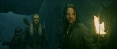

This website is for a homework due on 2/17, and to complete I will add in some random things. It took me a bit to figure out how to upload the pictures, as it was taking a very long time due to me failing to upload them into the right place. This class has been challenging, but a very new a fun way of exploring technology.
This section is going to be for HTML homework 2, im going to try and format this quick conversation between Gimli, Legolas and, Aragorn and mess around with the CSS
[Aragorn's party moves inside the Paths of the Dead, past piles of skulls.]
[Gimli runs to catch up. Shapes of arms are surround Legolas and Aragorn, who brush them aside. Gimli puffs at the ghosts around him.]
[Gimli stops at a snapping sound under his feet. He looks down and sees hundreds of skulls. Every step he takes lets a crackling out.]